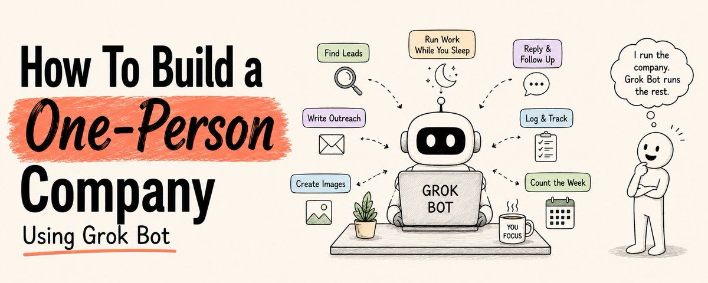
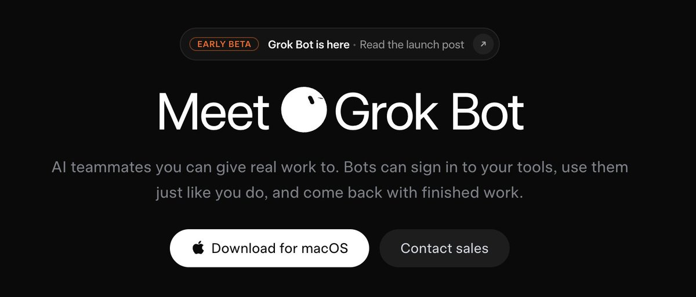
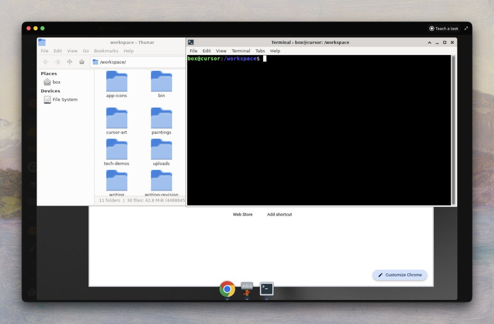
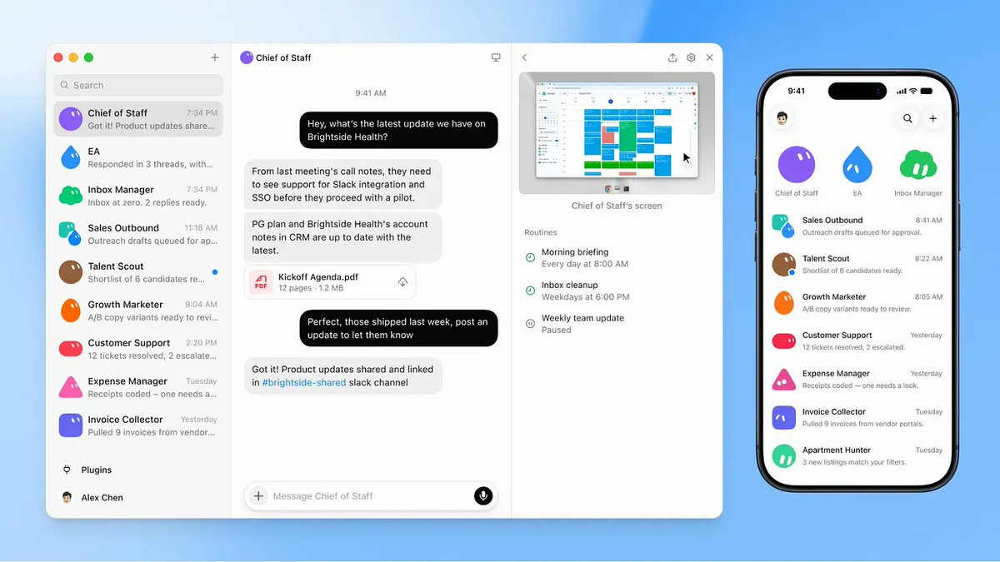
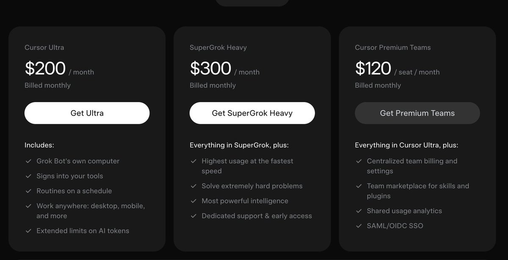
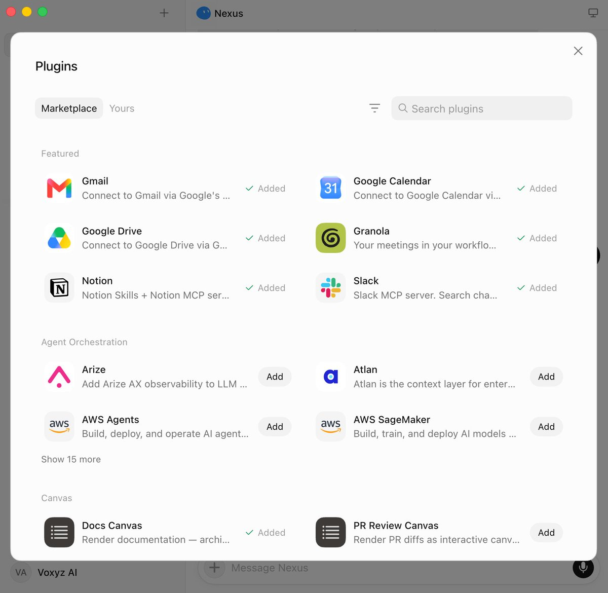
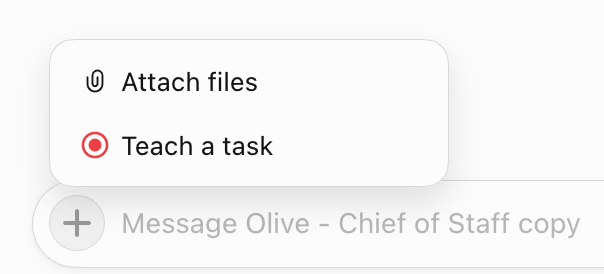
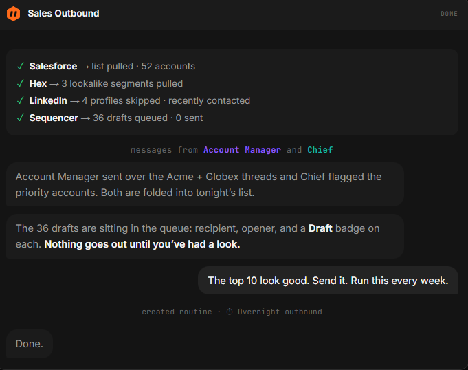

西堂 picks · 24/24
How To Build a One-Person Company Using Grok Bot
@sairahul1 · Rahul · Wed Aug 19 08:39:38 +0000 2026

You are running a one-person company.
You find the leads. Write the outreach. Make the images. Answer the replies. Count the week.
Everything waits for you. Nothing gets handed off.
And by the time the day is gone, the list is still sitting there.
Grok Bot (xAI's AI assistant that comes with its own computer) changes this.
Not by making you faster at those tasks.
By removing you from them entirely.
Here is the exact system.
Save this. You will use it every day.
What Grok Bot actually is

Most people will open it, type a question, read an answer, and close the tab.
That is using 10% of it.
Grok Bot is not a chatbot.
Each bot gets its own cloud computer.
It signs into your real tools - LinkedIn, Gmail, Slack (a work chat app), Notion (a notes and database app), your CRM and uses them the way you do.
It clicks. It navigates. It fills forms. It sends. It logs.
And it keeps working after you shut your laptop.
One account. One shared cloud computer. Up to 50 bots running on it at once.
Files, browser sessions, and logins are all shared.

Why this works

The whole company that built Grok Bot (SpaceX/xAI) runs this way internally.
People there keep several bots going at once, with one on top managing the rest.
A chief of staff. Then a specialist for each lane.
One of their engineers described previous personal agents like this:
"Configuring, provisioning, delegating, and triaging instead of doing useful things."
Grok Bot inverts that.
You describe a job in a sentence.
The bot has the computer, the logins, the memory, and the time.
You have the decisions.
That shift from prompting to delegating is the entire thing.
Step 1 — Get access
Three ways in:
→ SuperGrok (xAI's paid subscription plan) Heavy: $300/month from xAI
→ Cursor Ultra: $200/month (same login opens Grok Bot)
→ Cursor Teams Premium: $120/month per seat

Download the desktop app for macOS or iOS at x.ai/bot
Sign in with your Cursor or SuperGrok account.
The whole setup -> download to first bot takes about 4 minutes.
During onboarding it asks one question:
What tools do you use every day?
You get a grid: Google Workspace (a shared space for a team's files and apps), Slack, Notion, LinkedIn, GitHub (a site for storing and sharing code), Salesforce, HubSpot, Figma, Canva, Zoom, and more.
Pick your stack. The bots know where to operate before you ask them to do anything.
Step 2 — Hire your first bot
This is the step that separates people who get value from Grok Bot from people who bounce off it.
A prompt is a request.
A bot is a role.
Name it after a job someone could actually hold.
Inbox Manager. Talent Scout. Sales Outbound. SEO Guru. Marketing Head.
Then write its charter the way you would brief a new hire on day one:
→ What it owns
→ What good output looks like
→ What it must never do without asking you first
That last boundary is not paperwork.
It is the thing that lets you leave the bot running unattended because you have defined in advance where its authority stops.
THE CHARTER PROMPT — adapt and use for every bot
MARKDOWN block
Bots that have to ask about everything are useless.
Bots that never ask are dangerous.
The charter is where you draw that line once instead of worrying about it daily.
Step 3 — Connect the tools once

Settings → Plugins.
One-click connections to: Notion, Slack, Google Drive, Gmail, GitHub, Linear, Salesforce, HubSpot, and more.
The detail worth knowing:
Connections are shared across your entire account.
Connect Gmail once, every bot you ever create can use it.
You do this once. It is account-level plumbing.
That also means the blast radius of a connection is every bot you will ever create.
Connect only the accounts you actually need during beta.
For tools with no plugin:
The bot navigates on its own cloud browser until it hits a login wall.
It hands you the screen.
You authenticate. Click done.
The bot resumes on that same browser from where it left off.
You never type a credential into a chat message.
The bot gets a session, not a secret.
Sign in once. The whole team of bots is signed in.
Step 4 — Show it once. It runs forever.

This is the feature that changes everything.
You walk through a task one time while the bot watches.
It saves the entire flow as a named routine.
Then it runs that routine around the clock, fixing its own mistakes, with you nowhere near it.
Something you used to grind through every week now happens every night on its own.
That is roughly the whole gap between owning a tool and having an employee.
How to teach a task:
→ Open the bot's cloud computer (top-right corner icon)
→ Click "Teach a task"
→ Walk through the workflow while the bot watches (up to 10 minutes)
→ Click Stop
→ The bot creates a named, reusable skill from what you demonstrated
The best candidate for your first testing:
Something you do at least weekly, that involves two or more tools, and where the steps rarely change.
Recurring. Multi-tool. Stable.
Anything that fits all three is a routine waiting to be lifted off your plate.
Step 5 — Turn it into a scheduled routine

A saved skill still needs a reason to fire.
Two types of triggers, both set by talking, not by building a workflow:
Schedule: every morning at 7am, every Friday at 5pm, first of the month.
Trigger: new email matching a pattern, new Slack message, document changed.
Triggers are what make a bot feel present rather than just punctual.
MARKDOWN block
You can even say "run this every week" right after a task and it creates the schedule.
That is the entire flow.
Step 6 — Put them in a group chat
This is where one assistant becomes a company.
Put multiple bots in one group chat and they coordinate without you.
They pass work between each other. They assign ownership. They pull you in only for judgment calls.
You give the group an objective, not a task list.
A task list means you already did the decomposition.
An objective lets the bots split it, which is the whole point.
MARKDOWN block
The handoff, one bot deciding another is better suited and passing ownership, is something that did not exist in any AI tool before this.
The Chief of Staff setup:
Create one chief-of-staff bot whose job is coordinating the others.
Paste this into it:
MARKDOWN block
It reads your roster and returns a management structure you never had to write.
6 Ready-to-use bots
These are the 6 bots worth building first.
Copy the descriptions directly into your bot setup (take these as base but please update, add, be more detailed to make them really good. Write like a job description, what you say to an actual human employee)
1. Chief of Staff (Coordination)
MARKDOWN block
2. Scout (Research)
MARKDOWN block
3. Quill (Content)
MARKDOWN block
4. Forge (Engineering)
MARKDOWN block
5. Guide (Customers)
MARKDOWN block
6. Ledger (Finance)
MARKDOWN block
Some use cases you can do with @bot
Here are real things you can run on Grok Bot:
Sales and outreach:
→ Personalized cold email in your voice, booked into calendar when reply comes
→ LinkedIn connection requests to targeted titles, meeting requests sent automatically
→ Salesforce opportunity notes updated from call transcripts without opening the CRM
→ Account research before every call, pulled from Slack, email, and LinkedIn
Research and content:
→ Top YouTube channels in your niche scanned every morning, outliers flagged
→ Competitor pricing page monitored, Slack alert the moment something changes
→ Content calendar managed based on past performance analytics
→ LinkedIn and X posts drafted from call notes, waiting for your approval
Operations and finance:
→ Inbox triaged every morning - urgent, today, this week, ignore
→ Receipts filed from a photo dump, coded to the right category
→ Invoice actuals tracked with a bookkeeping skill
→ Subscription audit run, forgotten ones surfaced for cancellation
Personal:
→ Flights checked in automatically when the window opens (asks you for 2FA)
→ Property listings checked twice daily against budget and criteria, flagged under market
→ Grocery cart built from a recipe photo, order placed for delivery
→ Passport and visa appointment slots watched, booking confirmed after your approval
The honest part
Grok Bot is not for everyone right now.
$200/month minimum. You access it through Cursor Ultra or SuperGrok Heavy. There is no standalone plan. Free trial requires a credit card.
Still in early beta. Because bots click through real interfaces, a redesigned layout or random popup can trip them. Anything touching money, legal, or live customer emails needs a guardrail.
Hand it reversible, low-stakes jobs first. Watch the early runs more closely than you think you need to. Only let it off the leash once it has earned it.
Who this is actually for:
→ If your AI budget is $20/month and you are still learning, this is not your next step. Get fluent with Claude first.
→ If you are already a real AI power user running multiple tools daily, then this is a legitimate leap forward. The convenience of having the infrastructure handled is real.
Trade-off:
With Grok Bot, you are handing credentials to bots that live on a computer you do not control.
xAI's own material calls the shared computer "a real blast radius."
That is not reassuring language about your own product.
For a Trello planner, fine. For finances or client data, understand the isolation model before you trust it.
Your first 10 minutes
Don't read this and do nothing.
Pick one task from your week that is:
→ Something you do at least weekly
→ Involves two or more tools
→ Steps that rarely change
Open Grok Bot. Create a new bot.
Give it a name. Write a 4-sentence charter. Teach it the task by doing it once.
Walk away.
Come back tomorrow morning.
The task ran without you.
That moment, the first time you come back to finished work you did not do, is when everything shifts.
You stop being the one doing the clicking.
If this was useful:
→ Repost to share it with every solo founder you know
→ Follow @sairahul1 for more systems that run without you
→ Bookmark this, the 6 bot roles and the 3 charter sections are worth keeping
I write about AI, products, and systems that work while you sleep.